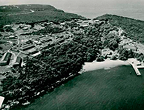
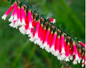
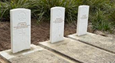
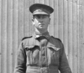
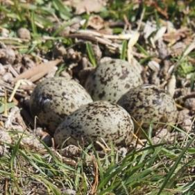

2026 Newsletters
If you would like to receive North Head Sanctuary Foundation newsletters via your email, just ask to be put on the mailing list by contacting:
northhead@fastmail.com.au

Quarantine station 1930
Jan / Feb 2026
Quarantine station, St Barbara and North Head, and Echidna Sightings

Epacris Longiflora
Mar / Apr 2026
Nursery update, cemetery works and Getting around North Head Sanctuary parklands

Reinstated headstones of Australian Service Personnel in the Third Quarantine Cemetery
May / Jun 2026
Reinstatement of headstones in the Third Quarantine Cemetery, a volunteer visit to IndigiGrow Native Plant Nursery at La Perouse, and the work of the NHSF propagation team and nursery 'Igloo'.

Staff Sergeant Percy Edwards, who died in quarantine at North Head in 1918
Jul / Aug 2026
The wartime story of dental mechanic Staff Sergeant Percy Edwards in the Third Quarantine Cemetery, spring wildflower walk dates for August to October, and this season's flowering species count.

Masked lapwing eggs. Photo: Peter Macinnis
Sep / Oct 2026
Spring wildflower walks, nesting masked lapwings, Dorothy Erickson, the Third Quarantine Cemetery gatekeeper's daughter, and a tribute to master craftsman Jim Frecklington.